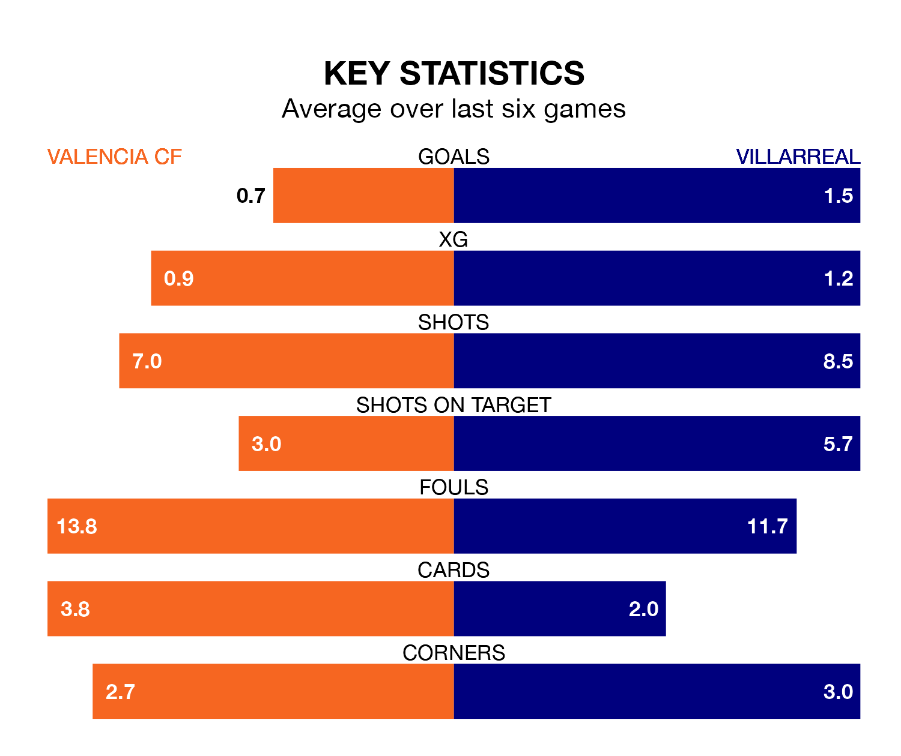

Valencia CF host Villarreal on Tuesday at Estadio de Mestalla in La Liga.
In their last league match, on December 19, Valencia beat Rayo Vallecano 1-0 away, with their goal scored by Sergi Canos.
Villarreal also won, 3-2 at home against Celta de Vigo on December 20, with Alfonso pedraza, Aïssa Mandi and Dani Parejo on the scoresheet.
In the last 10 years, Valencia and Villarreal have played each other on 21 occasions. They won nine each, and they drew three times.
On average, Valencia CF scored 1.2 goals and Villarreal 1.0 in those matches.
Their last meeting was on May 3, when they played out a 1-1 draw.
With 19 goals in 18 games so far this season, Valencia are scoring at below the league average rate with 1.1 goals per game. But they are conceding fewer than average too, letting in 22 goals at a rate of 1.2 per game.
Villarreal, meanwhile, are above average scorers, with 1.4 goals per game, compared to a league average of 1.3. They have conceded 1.9 goals per game.
The away team's Álex Baena is the league's most creative player, racking up five assists in 16 appearances so far this season.
For Valencia CF, Fran Perez has set up the most goals, having laid on three assists in 18 games.
The hosts are in disappointing form in La Liga, with one win and two draws from their last six games.
With two wins and a draw over that period, Villarreal's form is slightly better – they have taken seven points from 18, compared to Valencia's five.
Villarreal are 13th in the table after 18 games, of which they have won five and drawn four, earning 19 points.
Valencia are three places ahead of the visitors in 10th, with six wins and five draws putting them on 23 points.
Updated: 15:16, 21/12/23